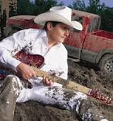
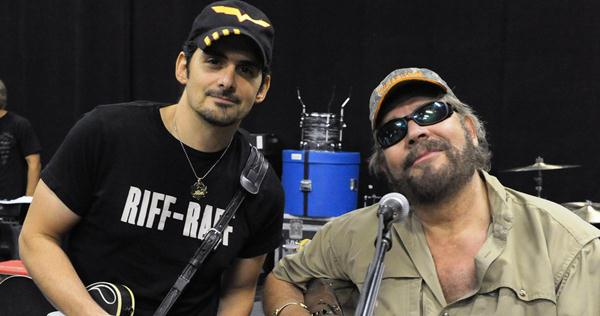
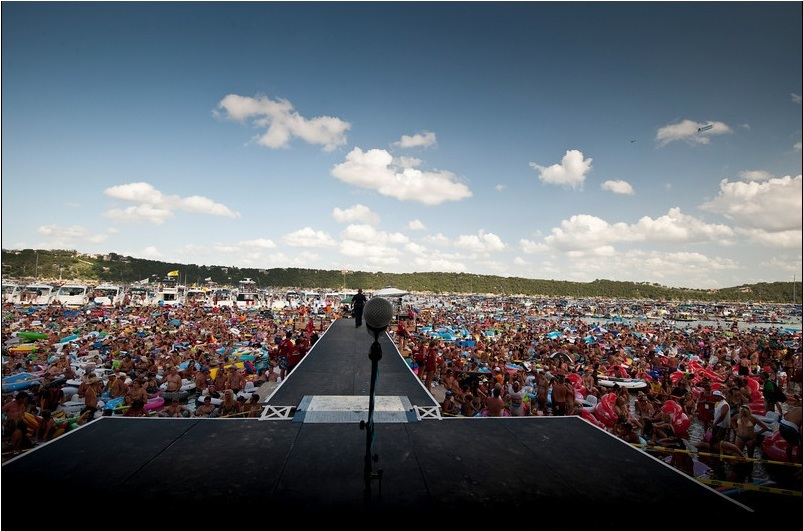

|


For more of Brad Paisleys's click on the image above
|

Brad Paisley released his first album, Who Needs Pictures, in 1999. The album sold more than 1 million copies and catapulted Paisley to fame. In 2000, the Academy of Country Music named Paisley the year's Best New Male Vocalist, and in February 2001, he was inducted into the Grand Ole Opry's Hall of Fame. He has since won numerous Grammy awards and has burned up the country charts consistently.
Country music singer, songwriter. Born October 28, 1972 in Glen Dale, West Virginia. Paisley's passion for music began at age eight, when his grandfather gave him his first guitar. By the age of 12, the young musician was singing in church and at civic meetings and playing in his first band, for which he wrote his own material. Paisley eventually secured a regular spot on Jamboree USA, a popular country music radio show. Paisley was so popular with listeners that he was invited to join the program as a full-time musician, opening for musicians such as The Judds and Roy Clark.
After two years at West Virginia's West Liberty State College, Paisley transferred to Belmont University in Nashville, Tennessee. At Belmont, Paisley studied under the American Society of Composers, Authors and Publishers scholarship, and met Frank Rogers and Kelley Lovelace, both of whom would help Paisley in his later career. A week after graduation, Paisley signed with EMI Records as a songwriter. His first success came with a hit penned in 1996 for David Kersh called "Another You."
Country Music Star
Paisley made his debut as a solo artist after signing to Arista. He released his first album, Who Needs Pictures, in 1999. The record produced the No. 1 hit "He Didn't Have to Be," followed by the chart-topping single, "We Danced." The album sold more than one million copies, and catapulted Paisley to fame. The next year, the Academy of Country Music (ACM) named Paisley the year's Best New Male Vocalist, and the Country Music Association (CMA) granted him the prestigious Horizon Award.
In of February 2001, Paisley was inducted into the Grand Ole Opry's Hall of Fame. Several months later, he received his first Grammy Award nomination for Best New Artist. He also released his second album, Part II, which featured his cheeky and unforgettable No. 1 single "I'm Gonna Miss Her (The Fishing Song)." Three other songs on the album, "I Wish You'd Stay," "Wrapped Around" and "Two People Fell in Love," also made it into the Top 10 on the country charts. His next album, Mud on the Tires (2003), was equally if not more successful, hitting No. 1 on the Billboard chart, and featuring an acclaimed duet with Alison Krauss called "Whiskey Lullaby." The video for his collaboration with Krauss won several awards, and the single made it to No. 3 on the Hot Country charts.
Paisley's 2005 effort, Time Well Wasted, came on the heels of his sold-out Two Hats and Redhead Tour with Reba McEntire and Terri Clark. The album includes another notable collaboration, "When I Get Where I'm Going" with Dolly Parton, which won the Country Music Association (CMA) Award for Musical Event of the Year in 2006. The album also scored Paisley both ACM and CMA Awards for Best Album. That same year, Paisley embarked on a successful tour, with rising country star Carrie Underwood serving as his opening act.
Teaming up to record together, Paisley
and Underwood sang a duet, "Oh Love," on his next release, 5th Gear (2007). Reaching the top spot on the country album charts, the album featured several No. 1 hit singles, including "Online," "Letter to Me," and "I'm Still a Guy." Paisley also took home several major awards that same year,
winning the ACM Award for Top Male Vocalist and the CMA Award for Male Vocalist of the Year. He also won his first Grammy Award for the instrumental track "Throttleneck."
Continued Success
His next album, Play: The Guitar Album, hit stores in November of 2008, featuring collaborations with musicians such as Keith Urban, Vince Gill and B. B. King. Paisley and Urban received 2008 Entertainer of the Year nominations at the CMAs for their duet. Although their performance didn't snag the award, Paisley walked away from the ceremony with other honors—this time for Male Vocalist of the Year and Music Video of the Year.
In 2009, Paisley released his American Saturday Night album. The first single off the album, a song called "Then" catapulted to No. 1, making it Paisley's 14th No. 1 hit. Thanks to his album, Paisley is up for seven CMA awards at November's ceremony, including Entertainer of the Year. He will also be co-hosting the event with Carrie Underwood.
Paisley met actress Kimberly Williams in 2001, after writing a song with lyrics about meeting Williams. He then made a video to accompany the single, and Williams agreed to appear. They couple married in 2003, and welcomed their first child, a son named William Huckleberry, in 2007. On April 17, 2009, they welcomed a second son, Jasper Warren Paisley.
© 2012 A+E Networks. All rights reserved.
Brad Paisleys Consert at AquaPalooza in 2010

|